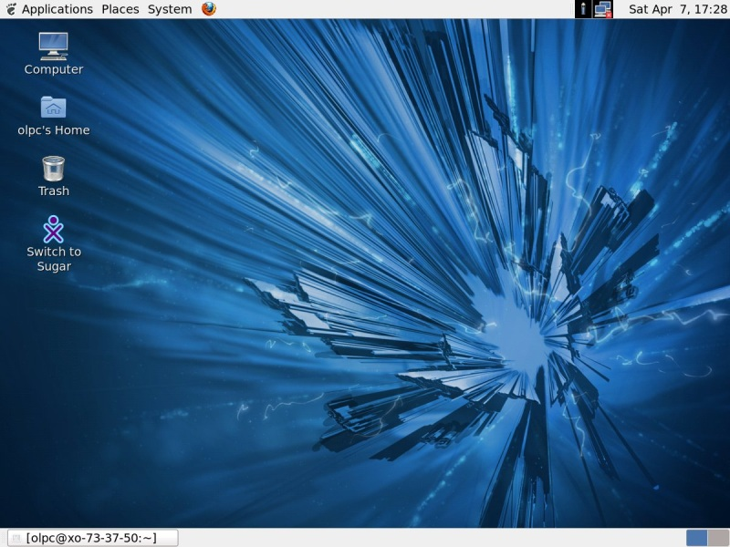
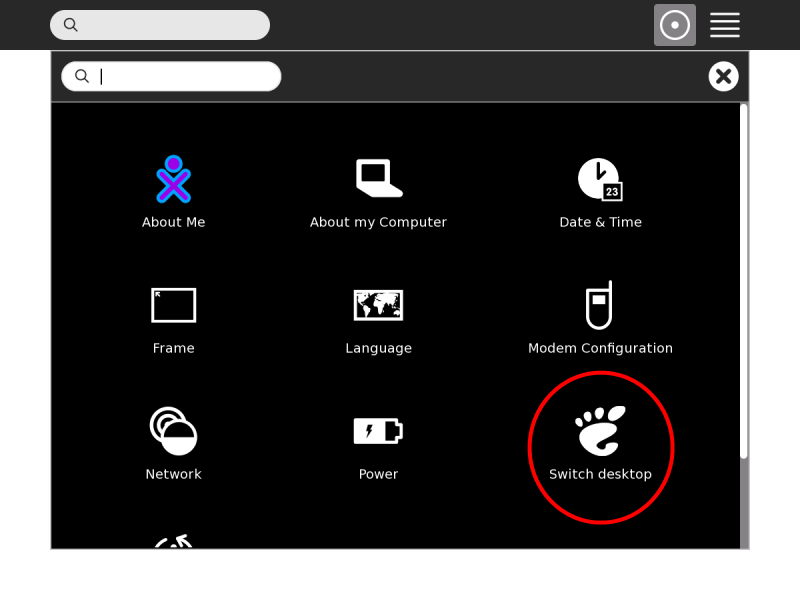
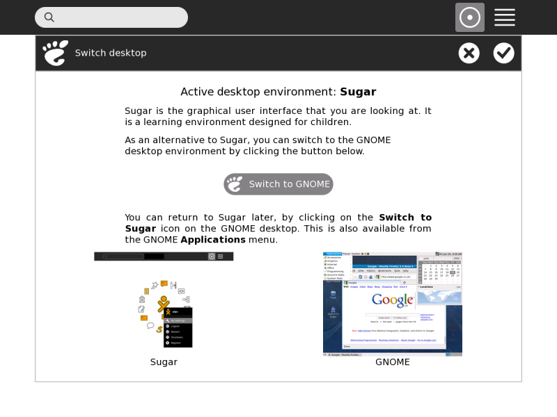
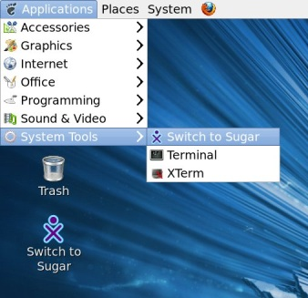

GNOME¶
In late 2009 OLPC added a more conventional desktop environment called GNOME to its operating system. This is intended for older children and advanced users.
In late 2014 OLPC switched to MATE desktop, which is what GNOME was like before GNOME began some very serious changes.

Users can switch from Sugar to GNOME or MATE through the Switch Desktop option under My Settings.

After selecting the Switch Desktop option another confirmation dialogue with additional information appears. The switch can be confirmed by clicking the Restart now button.

Switching back to Sugar can be done via the Switch to Sugar icon on the desktop or the Application - System Tools menu and confirming the corresponding message box.

Further information about GNOME is available on the GNOME Web site and its extensive Help section. Additional information about how to transfer files from Sugar’s Journal to GNOME’s Documents folder can be found in the Journal section.